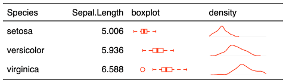

| plot_chunk {flextable} | R Documentation |
This function is used to insert mini plots into
flextable with function compose().
It should be used inside a call to as_paragraph().
Available plots are 'box', 'line', 'points', 'density'.
plot_chunk( value, width = 1, height = 0.2, type = "box", free_scale = FALSE, unit = "in", ... )
value |
a numeric vector, stored in a list column. |
width, height |
size of the resulting png file in inches |
type |
type of the plot: 'box', 'line', 'points' or 'density'. |
free_scale |
Should scales be free (TRUE or FALSE, the default value). |
unit |
unit for width and height, one of "in", "cm", "mm". |
... |
arguments sent to plot functions (see |

This chunk option requires package officedown in a R Markdown context with Word output format.
PowerPoint cannot mix images and text in a paragraph, images are removed when outputing to PowerPoint format.
Other chunk elements for paragraph:
as_bracket(),
as_b(),
as_chunk(),
as_equation(),
as_highlight(),
as_image(),
as_i(),
as_sub(),
as_sup(),
colorize(),
gg_chunk(),
hyperlink_text(),
linerange(),
lollipop(),
minibar()
library(data.table)
library(flextable)
z <- as.data.table(iris)
z <- z[ , list(
Sepal.Length = mean(Sepal.Length, na.rm = TRUE),
z = list(.SD$Sepal.Length)
), by = "Species"]
ft <- flextable(z,
col_keys = c("Species", "Sepal.Length", "box", "density"))
ft <- mk_par(ft, j = "box", value = as_paragraph(
plot_chunk(value = z, type = "box",
border = "red", col = "transparent")))
ft <- mk_par(ft, j = "density", value = as_paragraph(
plot_chunk(value = z, type = "dens", col = "red")))
ft <- set_table_properties(ft, layout = "autofit", width = .6)
ft <- set_header_labels(ft, box = "boxplot", density= "density")
theme_vanilla(ft)